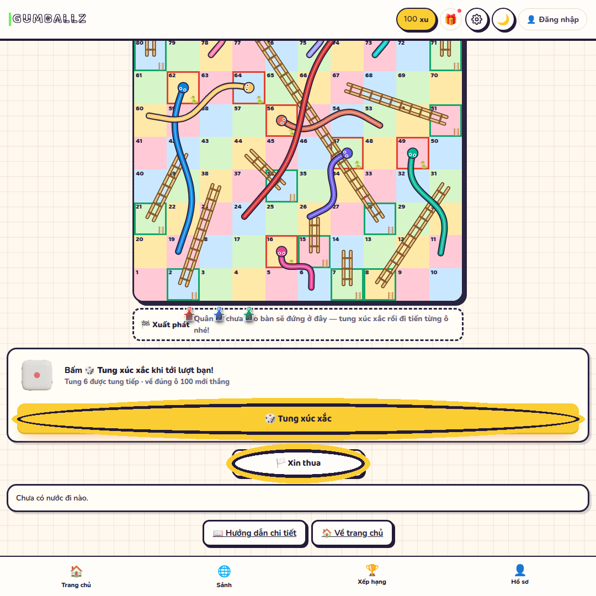

Rắn và Thang là trò chơi đua về đích bằng xúc xắc, 2–4 người chơi cùng chạy trên 1 bàn cờ 100 ô. Ai về đúng ô 100 trước thì thắng. Trên đường chạy có thang để leo tắt lên cao và có rắn cắn trượt tuột xuống thấp — thắng thua chủ yếu nhờ may mắn!
1. Bàn cờ 100 ô — đánh số kiểu rắn bò
- Bàn có 10 hàng × 10 cột = 100 ô, đánh số từ ô 1 ở góc dưới-trái lên tới ô 100 ở góc trên-trái.
- Số ô chạy kiểu rắn bò: hàng 1 (ô 1–10) đi trái → phải, hàng 2 (ô 11–20) đi phải → trái, cứ thế xen kẽ lên trên.
- Ai cũng bắt đầu ở ô xuất phát (ngoài bàn), tung xúc xắc rồi đi tiến từng ô một theo đúng thứ tự số.
2. Tung xúc xắc và di chuyển
- Tới lượt mình thì bấm 🎲 Tung xúc xắc: xúc xắc ra số nào (1–6) thì quân cờ đi tiến bấy nhiêu ô.
- Tung được 6 thì được tung tiếp 1 lần nữa ngay — tung 6 liên tiếp thì cứ tung tiếp hoài!
- Quân cờ của mỗi người có màu riêng: 🔴 Đỏ, 🔵 Xanh dương, 🟢 Xanh lá, 🟡 Vàng. Nhiều quân cùng 1 ô thì xếp lệch nhau 1 chút để vẫn nhìn thấy hết.
3. Thang — leo tắt lên cao 🪜
- Đáp đúng chân thang thì leo ngay lên đầu thang. Bàn này có 10 cái thang: 2→38, 7→14, 8→31, 15→26, 21→42, 28→84, 36→44, 51→67, 71→91, 80→100.
- Thang dài nhất là 28→84 (nhảy 56 ô 1 lần) và thang 80→100 đưa thẳng về đích!
- Đáp xuống đầu thang thì không có gì xảy ra — chỉ chân thang mới leo được.
4. Rắn — trượt tuột xuống thấp 🐍
- Đáp đúng đầu rắn thì trượt ngay xuống đuôi rắn. Bàn này có 10 con rắn: 16→6, 47→26, 49→11, 56→53, 62→19, 64→60, 87→24, 93→73, 95→75, 98→78.
- Rắn dài nhất là 87→24 (tuột 63 ô 1 lần) — đang gần về đích mà dính rắn này thì đau lắm!
- Đáp xuống đuôi rắn thì không có gì xảy ra. Trúng thang hay rắn xong thì dừng luôn, không leo/trượt tiếp nữa.
5. Về đích — phải đúng ô 100
- Muốn thắng phải về đúng ô 100. Đang ở ô 97 mà tung 4 (97 + 4 = 101) thì đứng yên tại chỗ, không đi — chờ lượt sau tung đúng số.
- Tung 6 mà thừa vẫn được tung tiếp (vì tung 6 luôn được tung lại).
- Người đầu tiên về ô 100 thắng ngay, ván kết thúc. Có thể bấm 🏳️ Xin thua để rời ván — người còn lại cuối cùng thắng.
6. Chế độ chơi & Máy AI
- 🌐 Chơi online: bấm 🌐 Online ở màn hình chính rồi Tạo phòng online — gửi mã phòng 5 ký tự (hoặc link mời) cho bạn; bạn nhập mã rồi bấm Vào. Chơi online đúng 2 người. Số xúc xắc do người tới lượt tung ra, gửi kèm trong nước đi nên 2 bên luôn thấy cùng 1 kết quả. Nếu đối thủ mất kết nối thì máy sẽ tung thay sau vài giây; chủ phòng rời thì phòng giải tán.
- Đấu với Máy: bạn với 1 máy. Máy Dễ và máy Khó chơi giống hệt nhau — trò này hoàn toàn dựa vào may mắn, máy chỉ tung xúc xắc công bằng như bạn, không gian lận, không tính toán gì được. Hai nút Dễ/Khó chỉ để giao diện đồng bộ với các game khác thôi.
- 2–4 Người chơi: 2–4 người ngồi chung 1 máy, thay phiên nhau tung xúc xắc. Chọn số người ở màn hình chính rồi nhập tên từng người.
7. Mẹo cho người mới
- Trò này không có chiến thuật — thắng thua nhờ xúc xắc, nên cứ thoải mái mà chơi, hồi hộp nhất là lúc sắp về đích!
- Nhớ các chân thang gần: ô 2, 7, 8, 15, 21, 28 đều có thang — đầu ván mà tung trúng là bay xa ngay.
- Cẩn thận các đầu rắn cuối bàn: ô 87, 93, 95, 98 — gần về đích mà dính rắn là tuột về giữa bàn.
- Đang ở ô 97–99 thì chỉ mong tung đúng 3–2–1: tung thừa là đứng yên, hồi hộp lắm đấy!